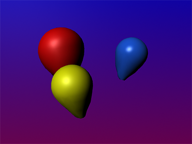
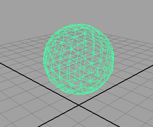
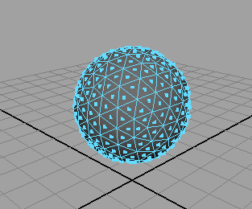
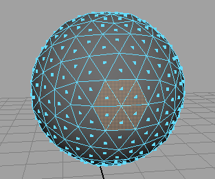
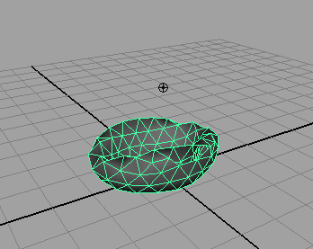
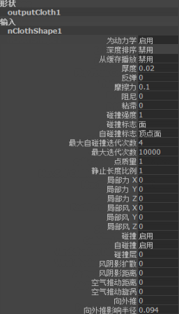
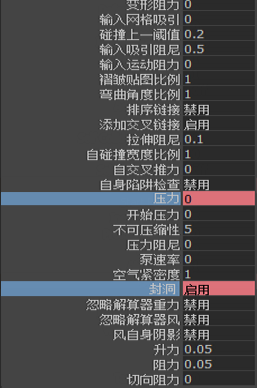
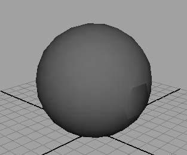

本示例将介绍如何为虚拟气球创建灵活的蒙皮。
创建气球
若要以气球为模型，您将创建二十面体。此操作将产生比多边形球体更真实的运动。
以气球为模型
- 在“多边形”(Polygons)菜单集中，选择“创建 > 多边形基本体 > 柏拉图多面体”(Create > Polygon Primitives > Platonic Solids) >
 。
。 此时将出现“多边形柏拉图多面体选项”(Polygon Platonic Solid Options)窗口。
- 将“柏拉图多面体类型”(Platonic Type)设定为“二十面体”(Icosahedron)，然后单击“创建”(Create)。
- 选择网格 > 平滑(Mesh > Smooth)。
- 在“属性编辑器”(Attribute Editor)中，选择“polySmoothface1”选项卡。
- 将“方法”(Method)设定为“线性”(Linear)
- 在“线性多边形平滑历史”(Linear Poly Smooth History)部分，将属性调整为如下所示：
- 分段级别(Division Levels)：1
- 每个面的分段数(Divisions per Face)：3
- 推动强度(Push Strength)：0.8
- 圆度(Roundness)：2
调整气球的大小和形状
在本示例中，气球的气球模型将保持球形。（可选操作）您可以将模型重新定形为更像气球的形状。

- 选择气球，然后选择“移动工具”(Move Tool)。
- 将气球移动到地平面上方（在正 Y 方向）。
- 选择“对所有项目进行平滑着色处理”(Smooth Shade All)模式（热键：5）。
-
 键单击气球，然后从显示的标记菜单中选择“面”(Face)。
键单击气球，然后从显示的标记菜单中选择“面”(Face)。 现在气球出现在面选择模式中。
 - 在气球的一侧，选择形成六边形的 6 个相邻面。 
- 按
 键。
键。 选定的面被删除。
使气球以 nCloth 为模型
- 在 FX 菜单集中，选择气球，然后选择“nCloth > 创建 nCloth”(nCloth > Create nCloth)。
Maya 将多边形气球转化为 nCloth 对象。
使气球模型的作用类似于气球
既然您已经有了充气气球的基本形状，则需要配置气球的属性，以便它像气球及其初始状态一样工作，因此开始放气。
调整气球的属性
- 选择气球。
- 在“属性编辑器”(Attribute Editor)中，选择“nClothShape1”选项卡。
- 在“碰撞”(Collisions)部分中，将“厚度”(Thickness)设定为 0.02。
- 在“动力学特性”(Dynamic Properties)部分，将“拉伸阻力”(Stretch Resistance)设定为 80。
- 在“压力”(Pressure)部分中，将“压力”(Pressure)设定为 0，将“封洞”(Seal Holes)设定为“启用”。
- 在“质量设置”(Quality Settings)部分中，将“求值顺序”(Evaluation Order)设定为“平行”。
- 选择“nucleus1”选项卡。
- 在“地平面”(Ground Plane)部分，启用“使用平面”(Use Plane)。
- 将播放范围的“结束时间”设定为 450。
- 播放模拟。
放气的气球掉落在地板上。

设置气球的初始状态
- 转到播放范围的开头。
- 选择气球，然后选择“字段/解算器 > 初始状态 > 松弛初始状态”(Fields/Solvers > Initial State > Relax Initial State) > 。
此时将出现“松弛初始状态选项”(Relax Initial State Options)窗口。
- 选择“编辑 > 重置设置”(Edit > Reset Settings)。
- 将“步数”(Steps)设定为 200，然后单击“松弛初始状态”(Relax Initial State)。
Maya 会自动将场景播放到第 200 帧，然后将气球模拟保存到磁盘。
- 选择“nCloth > 静止形状 > 将静止形状设置为初始形状”(nCloth > Rest Shape > Set Rest to Start Shape)。
气球以其放气的形式开始模拟。
给气球充气和放气
既然气球开始访求，可以设置气球充气的动画，然后放气。
将气球充气
- 转到播放范围的开头。
- 选择 nCloth 气球。
- 打开“通道盒”(Channel Box)，在“输入”(Inputs)下，选择“nClothShape1”。 
- 选择“压力”(Pressure)，然后按住
 键的同时单击“封洞”(Seal Holes)，以将其包含在选择中。键单击每个名称，然后从显示的上下文相关菜单中选择“为选定项设定关键帧”(Key Selected)。
键的同时单击“封洞”(Seal Holes)，以将其包含在选择中。键单击每个名称，然后从显示的上下文相关菜单中选择“为选定项设定关键帧”(Key Selected)。 该字段将更改颜色以确认您正确地设定关键帧。
 - 转到模拟的第 200 帧。
- 将“压力”(Pressure)设定为 10。
- 选择“压力”(Pressure)。
- 键单击该名称，然后从显示的上下文相关菜单中选择“为选定项设定关键帧”(Key Selected)。
- 播放动画。
开始时气球充气非常迅速，然后从 200 帧开始减缓。

将气球放气
- 转到动画的第 300 帧。
- 在“通道盒”(Channel Box)中，选择“压力”(Pressure)，然后按住 键的同时单击“封洞”(Seal Holes)，以将其包含在选择中。键单击每个名称，然后从显示的上下文相关菜单中选择“为选定项设定关键帧”(Key Selected)。
该字段将更改颜色以确认您已经正确地设定关键帧。
- 转到动画的第 301 帧。
- 将“封洞”(Seal Holes)设定为“禁用”(off)。
- 键单击名称“封洞”(Seal Holes)，然后从显示的上下文相关菜单中选择“为选定项设定关键帧”(Key Selected)。
- 转到动画的第 450 帧。
- 将“压力”设定为 0。
- 键单击名称“压力”(Pressure)，然后从显示的上下文相关菜单中选择“为选定项设定关键帧”(Key Selected)。
- 播放模拟。
在第 300 帧时，气球由于几何体中的洞释放空气而飞走。